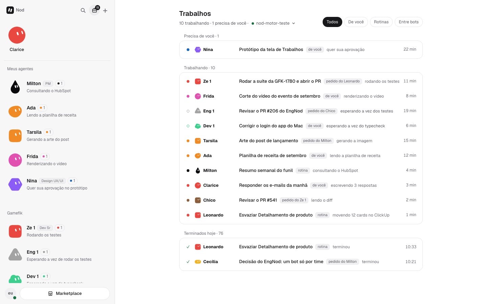
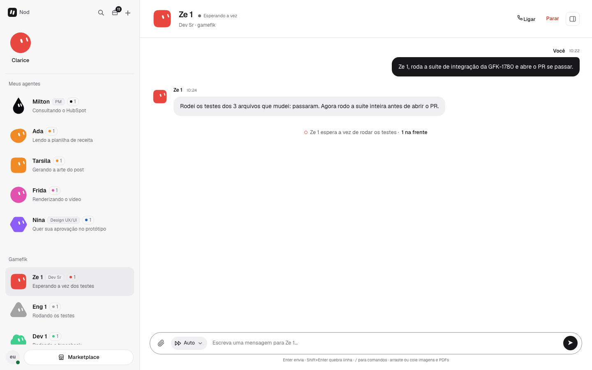

Agentes entram, trabalho pesado faz fila
Por que a VM de 8 núcleos mostrou 91% de processador com só 3 bots, e o plano para ela rodar uma dezena de agentes ao mesmo tempo, em qualquer tipo de task.
O que aconteceu
A nod-motor-teste (e2-highcpu-8: 8 vCPU, 8 GB, sem swap) marcou "processador cheio" com Ze 1, Eng 1 e Tarsila trabalhando. Medimos cada processo por 30 segundos, agrupado pela pasta da task. Os agentes quase não pesavam; o peso era o que eles rodavam.
| O que rodava | Processador | Memória |
|---|---|---|
Cada agente (claude -p) | 3–6% de um núcleo | 290–340 MB |
Typecheck da Tarsila (tsc --noEmit) | 1,6 núcleo | 976 MB |
| Postgres de teste do gamefik (Ze 1) | 96% de um núcleo | 300 MB |
| Testes do nod (Eng 1, vitest) | 1 processo por núcleo | ~50 MB cada |
| Máquina inteira | picos de 90–98% | 5,4 GB usados · 2,5 GB livres |
A tela dizia "os bots usam 925 MB" porque conta só o processo do Claude. No dia, a VM ficou quase o tempo todo perto de 0%, com rajadas às 01:07, 02:37 e 10:23–10:38 (Brasília). Nessas rajadas o portão segurou trabalho novo de 30 s a 2,5 min por vez.
O princípio
Agentes custam pouco e entram à vontade. Comando pesado faz fila. O usuário decide dinheiro, prioridade e o próprio projeto.
Um agente passa quase todo o tempo esperando o modelo responder. Quem pesa é o comando que ele dispara: testes, typecheck, um Postgres, um vídeo. Esses comandos usam todos os núcleos que encontram, por isso uma máquina maior não baixa o pico; só o encurta.
Hoje o nod fecha a porta do restaurante quando o forno enche. O certo é deixar os garçons trabalharem e fazer fila só no forno.
O processador cheio deixa os comandos mais lentos, mas não barra mais a entrada de agentes. Memória e disco continuam segurando.
Quem cuida do quê
Medir certo
Consumo da task inteira (agente + o que abriu). A régua do processador olha uso sustentado e deixa de barrar a entrada. As telas leem a mesma leitura.
Deixar entrar pela memória
Cabe mais um agente se sobram ~400 MB além da reserva dos comandos pesados.
Fila do forno
O hook que já roda antes de cada comando do bot pede vaga. "Pesado" é o pico de memória medido daquele comando; o resto não espera.
Repartir a máquina
Na VM, cada task no seu grupo, com peso de processador e limite de memória; swap comprimido no instalador. No Mac, prioridade baixa para comando de fundo.
Bots econômicos
Durante o trabalho, só os testes do que mexeu. A suíte completa, uma vez antes do PR.
Limpar o que abriu
Task terminada encerra tudo que abriu, como os Postgres esquecidos do Eng 1.
Falar em linguagem simples
"Trabalhando" separado de "esperando a vez". Recomendação de máquina a partir do tempo de fila medido.
Tamanho da máquina
Define quantos comandos pesados rodam por vez. O nod recomenda.
Quanto dá para os bots
A opção que já existe em Seu espaço.
O peso do projeto
Como os testes do gamefik com um Postgres por arquivo. O nod aponta; o usuário pede a otimização se quiser.
Prioridades
Quais bots e rotinas ficam na mesma máquina. O que ele pede na conversa sempre passa na frente.
Ordem de entrega
Medir e arrumar
Medição por task, swap na VM, encerrar o que a task abriu. Pequeno, sem risco, dá os números.
A dezena de agentes
Entrar pela memória, fila do forno, bots econômicos.
Estável com muita gente
Grupo por task na VM, prioridade no Mac.
Explicar e recomendar
Tela de espera e recomendação de máquina com os dados das fases anteriores.
Hoje e depois da fase 1
| Hoje | Depois da fase 1 | |
|---|---|---|
| Agentes ao mesmo tempo | ~3 a 4: o portão para no primeiro pico de teste | 10 a 12 |
| Comandos pesados | todos juntos, brigando pela máquina | 2 a 3 por vez, os outros em fila |
| Pico de processador | segura a porta | só deixa os comandos mais lentos |
| Falta de memória | trava a VM inteira | segura o próximo comando pesado; se estourar, cai só a task culpada |
Estimativas a partir de uma amostra de 11/10. A fase 0 serve para confirmá-las.
Como fica na tela
Protótipo com o CSS real do Nod. O canvas completo, com 11 telas e notas: abrir o canvas.




Em aberto
- A reserva por agente (~400 MB) e o quanto guardar para comandos pesados.
- A janela da régua sustentada: 3 ou 5 minutos.
- A ordem da fila: chegada ou prioridade.
- Fila para o Codex, que não tem o hook do Claude Code. Até lá ele fica protegido só pelo grupo da task.
- Nas telas: o anel vazado na cor do bot ou cinza (para não confundir com o âmbar de "esperando colega"); se o MB por task faz falta na lista; depois de quantos minutos de fila no dia aparece "Ver como acelerar" (o protótipo usa 30).
No repositório (branch docs/agentes-e-trabalho-pesado): docs/adr/adr-097-agentes-entram-trabalho-pesado-faz-fila.md, docs/plano-agentes-e-trabalho-pesado.md e as telas em docs/prototipos/agentes-e-trabalho-pesado/.